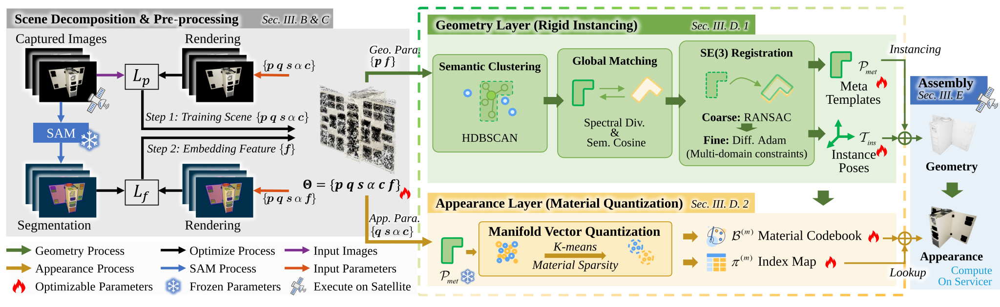
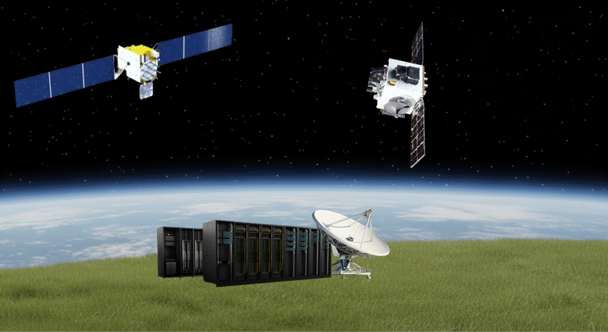
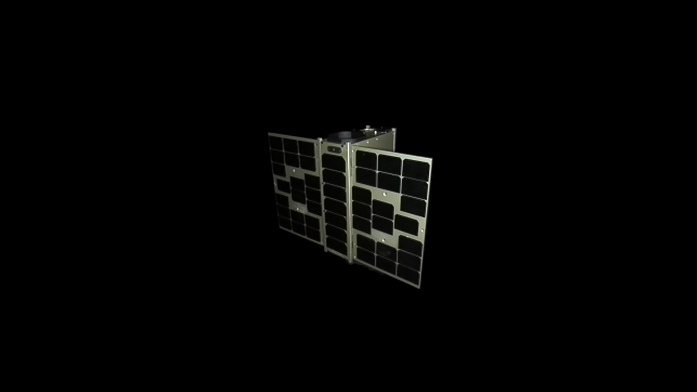
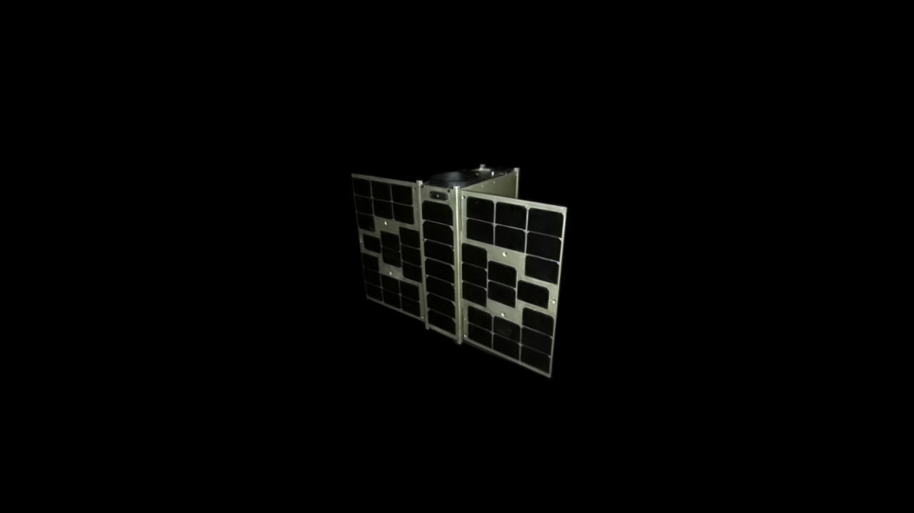
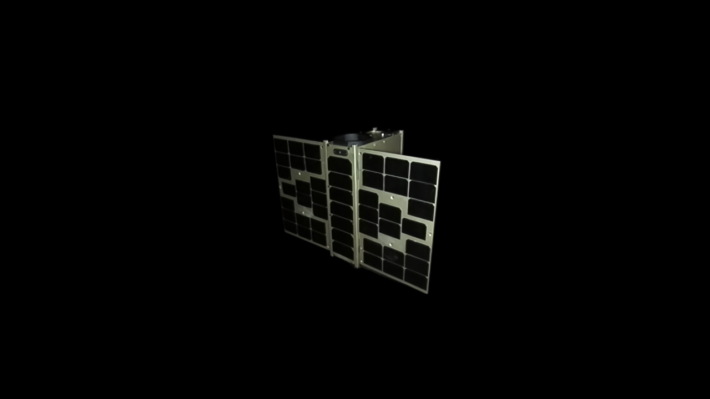
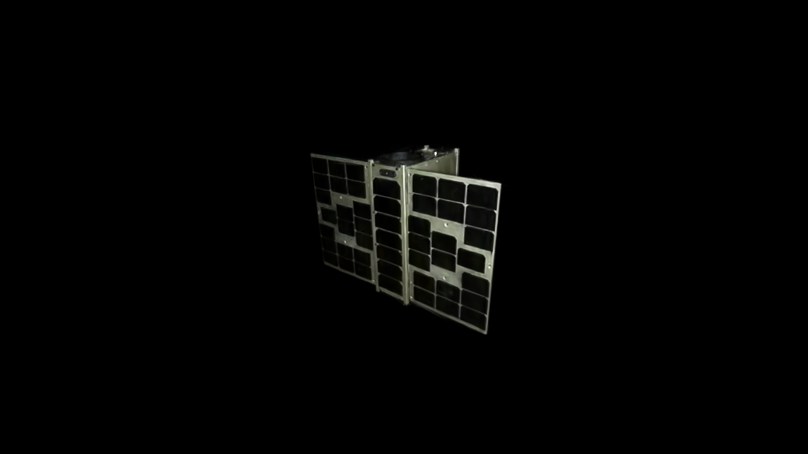
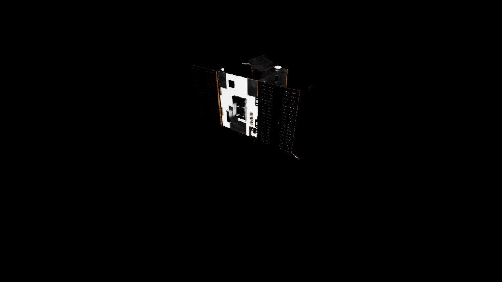
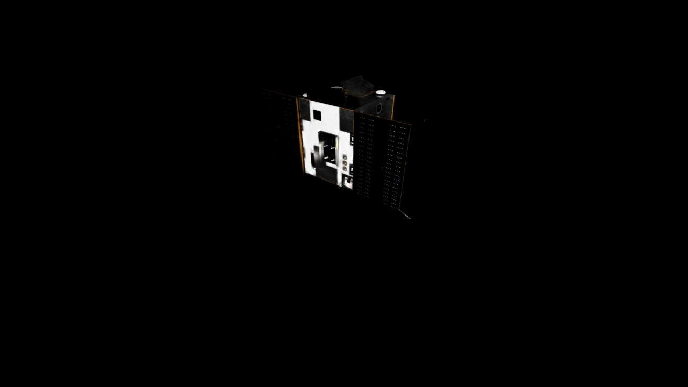
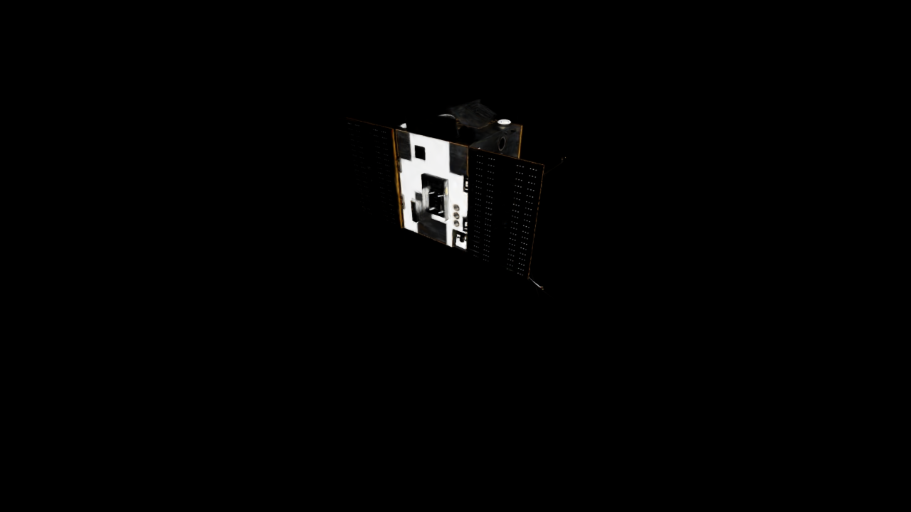

While 3D Gaussian Splatting (3DGS) has revolutionized real-time rendering with high visual fidelity, its unstructured and discrete nature poses significant challenges for efficient storage and transmission, especially in bandwidth-constrained space-ground communications. Existing compression paradigms rely on signal redundancy, often leading to geometric collapse on complex structures at extreme bitrates.
We propose a physics-aware hierarchical 3DGS compression framework tailored for aerospace objects. The method reconfigures compression from pixel-level entropy coding to semantic-oriented component reorganization. A geometry layer condenses repetitive structures into compact meta-templates through spectral divergence pruning, rigid alignment, and differentiable refinement, while an appearance layer exploits material sparsity via component-wise manifold vector quantization. Experiments on SPARD show strong rate-distortion performance and a compact representation suitable for on-orbit servicing.

The overall pipeline of the proposed framework. First, an unstructured Gaussian field is decomposed into semantic components. Then, a hierarchical representation is constructed with a geometry layer and an appearance layer. Finally, the compact representation is packed for efficient storage and real-time rendering.

Integrated space-ground computational architecture for on-orbit servicing missions. A servicing satellite captures multi-view images of a target. Large-scale computation is performed on ground supercomputers.







@article{Yang2026PAH3DGS,
author = {Yang, Dazhuang and Zhao, Tao and Zhang, Yizhai and Shen, Ganghui and Fang, Guotao and Huang, Panfeng and Wang, Binglu},
title = {Physics-Aware Hierarchical 3DGS Compression: An Efficient Representation for Aerospace Objects},
year = {2026}
}